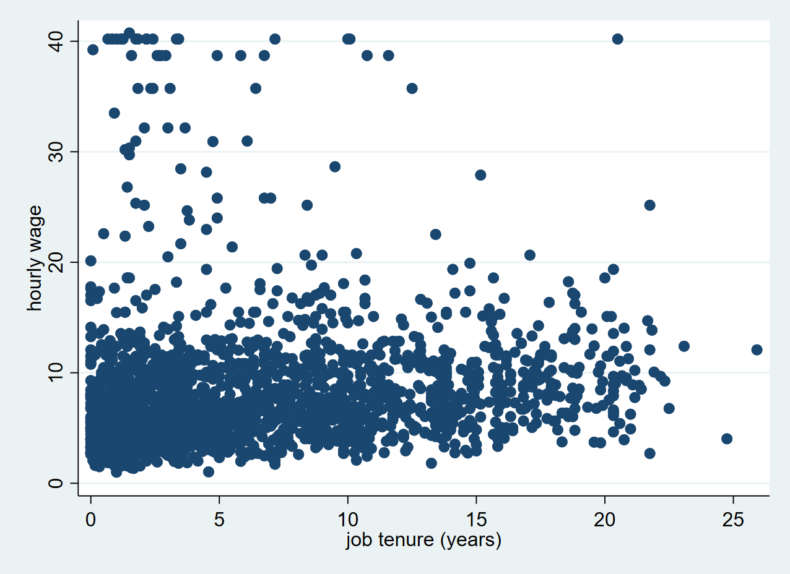
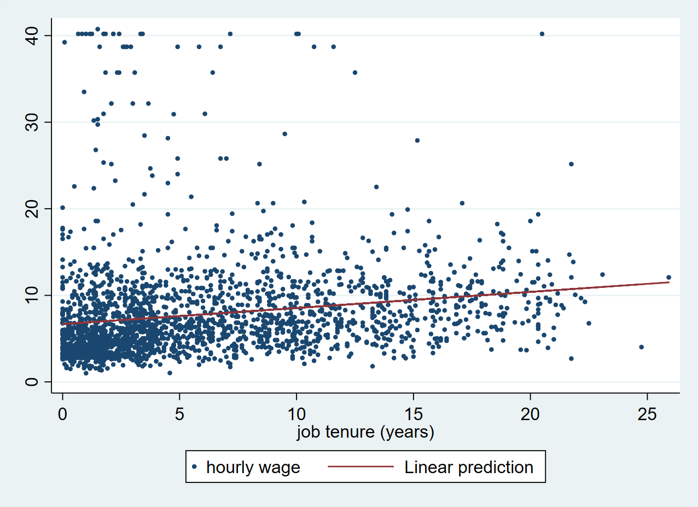
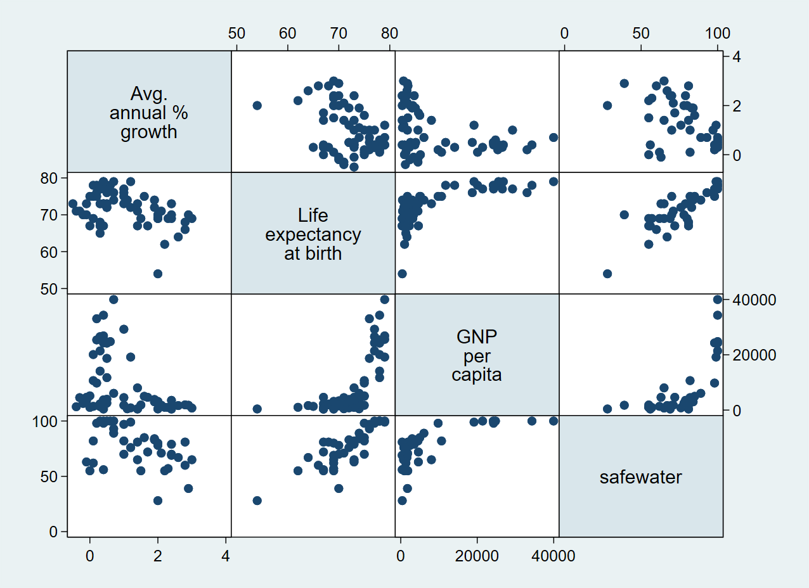
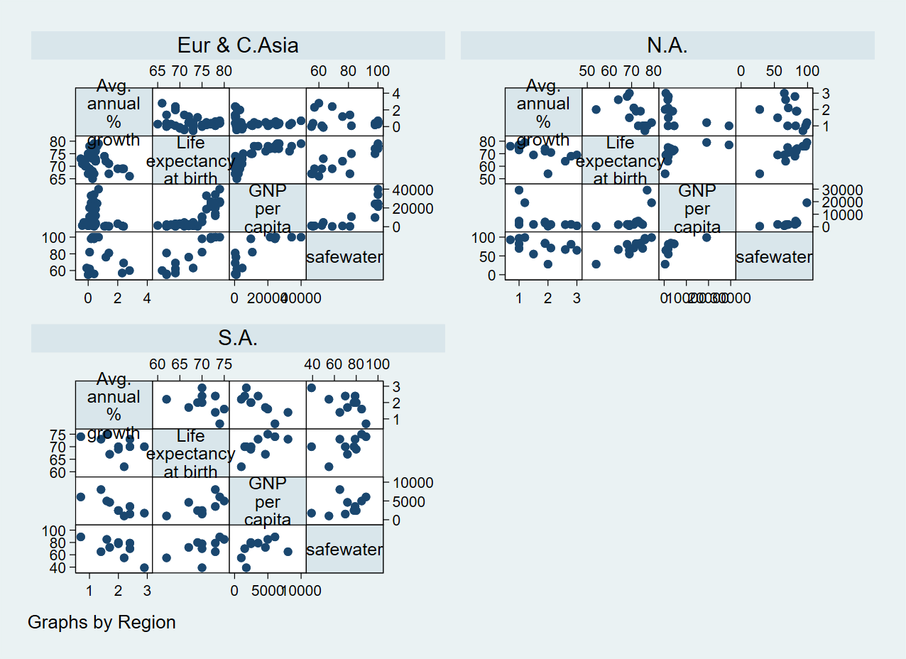
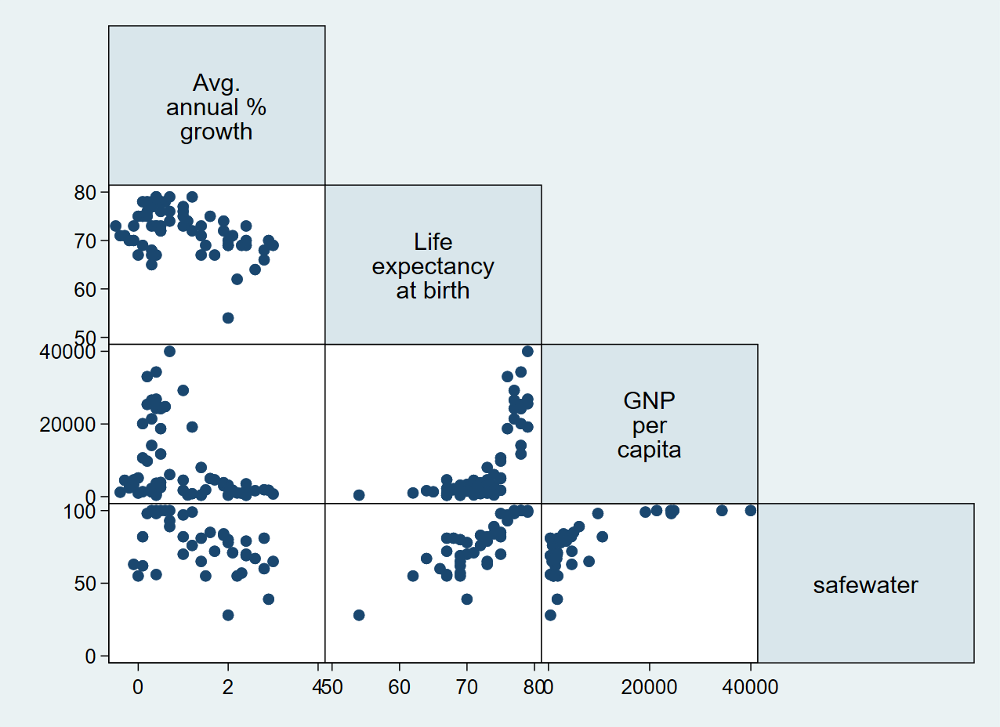

On this page
📋 Starting your session: confidence check
Once your workshop session has started, please complete this short questionnaire before beginning your first project during the workshop you attend today. It helps us understand how confident you feel before the session.
Open the starting confidence check ↗DIGITAL SKILLS LAB · STATA
Stata Fundamentals 3: Linear Regression
A practical guide to exploring relationships, creating scatter plots and running simple and multiple linear regression.
More information on how the session is run
How to work together:- Please turn on your microphone and webcam.
- One shares the screen and the other requests remote control.
- Take turns on who types for each exercise.
- Ask the trainer if you struggle to find a solution.
- Use the help command. To get help with a specific command type help "command name"
- Search online. The statalist.org forum is usually the most useful resource.
- Use familiar Stata commands to explore a dataset prior to running a regression analysis.
- Create and customize scatter plots
- Run a simple linear regression and read the analysis output.
- Create scatter plots for a set of variables using a scatter matrix
- Run a multiple linear regression and read the analysis output.
- Create a correlation matrix.
Linear Regression
Stata allows you to easily perform and visualise simple linear regression.
For this example, we will use the sample dataset nlsw88.dta in-built in Stata. We can access this dataset with the sysuse command. Add the clear option, if a dataset is already loaded in Stata.
. sysuse nlsw88.dta, clear
(NLSW, 1988 extract)
Let us start by inspecting the variables in the dataset. We use the describe command, to get an overview of all variables in the dataset and what they represent.
. describe
Contains data from C:\Program Files (x86)\Stata15\ado\base/n/nlsw88.dta
obs: 2,246 NLSW, 1988 extract
vars: 17 1 May 2016 22:52
size: 60,642 (_dta has notes)
--------------------------------------------------------------------------------
storage display value
variable name type format label variable label
--------------------------------------------------------------------------------
idcode int %8.0g NLS id
age byte %8.0g age in current year
race byte %8.0g racelbl race
married byte %8.0g marlbl married
never_married byte %8.0g never married
grade byte %8.0g current grade completed
collgrad byte %16.0g gradlbl college graduate
south byte %8.0g lives in south
smsa byte %9.0g smsalbl lives in SMSA
c_city byte %8.0g lives in central city
industry byte %23.0g indlbl industry
occupation byte %22.0g occlbl occupation
union byte %8.0g unionlbl union worker
wage float %9.0g hourly wage
hours byte %8.0g usual hours worked
ttl_exp float %9.0g total work experience
tenure float %9.0g job tenure (years)
--------------------------------------------------------------------------------
Sorted by: idcode
Although it is possible to include categorical variables in a linear regression model, in this tutorial, we will only consider numerical non-categorical variables.
Examples of a categorical variable is sex, race or occupation. These have a limited set of values and there is no inherent order in the different values.
Examples of numerical non-categorical variables are age, wage, hours. These variables might have an unlimited set of values or they can be ordered in a pre-defined way.
To have a look at the whole dataset and to narrow down potential variables for our analysis, we use the browse command.
. browse

We are interested in the two variables wage and tenure. Performing simple summary statistics can help you to better understand the distribution of the variables.
. sum tenure wage
Variable | Obs Mean Std. Dev. Min Max
-------------+---------------------------------------------------------
tenure | 2,231 5.97785 5.510331 0 25.91667
wage | 2,246 7.766949 5.755523 1.004952 40.74659
Scatter Plots
Stata has a very easy-to-use graphical interface to create all plots. However, it is useful to get used to using code instead of the graphical interface as early as possible to be able to work your way up to more sophisticated graphs.
Here’s how you make a very simple scatter plot in Stata using the scatter command. Remember that the first variable is always displayed on the Y axis and the second variable is displayed on the X axis.
. scatter wage tenure

Exercise: Scatter plot
- Open the auto dataset, which is like the nlsw88.dta data one of Stata's built-in datasets.
- Explore your dataset using the different commands that you have learned so far. In your opinion, on which variables could you perform a linear regression?
- Make a scatter plot with the miles per gallon of the car (mpg) and their weight (weight). What is the relationship between weight and mpg?
- Customise your plot to show the markers in a different colour and symbol.
- Bonus: Can you show a label with the model of the car in your scatter plot?
Running a linear regression
Now that we have visualised the relationship between tenure and wage on a scatter plot, it is time to find out if there is an actual linear relationship between the two variables. We can find out by using the regress command, which will calculate a model to estimate the relationship between the wage and tenure variable.
Remember to type the dependent variable first and the independent variable second.
. regress wage tenure
Source | SS df MS Number of obs = 2,231
-------------+---------------------------------- F(1, 2229) = 72.66
Model | 2339.38077 1 2339.38077 Prob > F = 0.0000
Residual | 71762.4469 2,229 32.1949066 R-squared = 0.0316
-------------+---------------------------------- Adj R-squared = 0.0311
Total | 74101.8276 2,230 33.2295191 Root MSE = 5.6741
------------------------------------------------------------------------------
wage | Coef. Std. Err. t P>|t| [95% Conf. Interval]
-------------+----------------------------------------------------------------
tenure | .1858747 .0218054 8.52 0.000 .1431138 .2286357
_cons | 6.681316 .1772615 37.69 0.000 6.333702 7.028931
------------------------------------------------------------------------------
As a result, Stata gives me a range of useful statistics. Perhaps the most interesting is the first line lower table (tenure), in which we see that there is a regression coefficient of 0.1858747, alongside a standard error of 0.0218054.
We can interpret this as each year increase in work tenure is associated with an increase of 0.1858747 in hourly wage. The standard error gives us an indication of how certain this estimation is. The lower the standard error, the more certain we can be that the regression coefficient is a good estimation of the relationship between the two variables.
The p-value (P>|t|) shows that the correlation is statistically significant, as it is below the critical level of 0.05. The _cons line shows us values about the intercept. These are usually not very interesting for the interpretation of the data. The intercept is the predicted value for a tenure of 0 years, which is 6.681316.
Scatter plot with fitted line
Based on the model that Stata has calculated, we can now create a new variable with predicted values for wage. We can use the predict command to generate this new variable with predicted values. We create a new variable called pred_wage by typing:
. predict pred_wage, xb
(15 missing values generated)
Using the fitted values from pred_wage, we can now add a fitted line to our scatter plot.
With the twoway command, we can combine a scatter and a line plot in a single chart. We first plot the scatter and then the line on top. When using twoway the scatter and line command both have to be put in separate parentheses.
. twoway (scatter wage tenure, msize(0.5)) (line pred_wage tenure)

Exercise: Simple linear regression
- Perform a regression analysis with the variables mpg and weight
- Fit a regression line on your scatter plot.
Multiple Linear Regression
In the next section, we look at an example of multiple linear regression. Here we have multiple predictors, or independent variables. For this, we will be using a life expectancy dataset from the Stata website:
. use http://www.stata-press.com/data/r13/lifeexp, clear
(Life expectancy, 1998)
Scatter Matrix
First, we can do a preliminary screening of the relationships by creating a scatter matrix using the graph matrix command passing all variables that we would like to explore.
. graph matrix popgrowth lexp gnppc safewater

We can also group our scatter matrix by another variable using the by() option:
. graph matrix popgrowth lexp gnppc safewater, by(region)

Or we can only show half of the graph:
. graph matrix popgrowth lexp gnppc safewater, half

Running a multiple Linear Regression
Similar to the previous example, we can use the regress command for multiple variables, with the dependent variable going first.
. regress popgrowth lexp gnppc safewater
Source | SS df MS Number of obs = 37
-------------+---------------------------------- F(3, 33) = 4.28
Model | 8.66091026 3 2.88697009 Prob > F = 0.0117
Residual | 22.2693603 33 .674829098 R-squared = 0.2800
-------------+---------------------------------- Adj R-squared = 0.2146
Total | 30.9302705 36 .859174181 Root MSE = .82148
------------------------------------------------------------------------------
popgrowth | Coef. Std. Err. t P>|t| [95% Conf. Interval]
-------------+----------------------------------------------------------------
lexp | -.0611253 .0480779 -1.27 0.212 -.1589404 .0366899
gnppc | -.000031 .0000196 -1.58 0.124 -.000071 8.96e-06
safewater | .0066364 .014125 0.47 0.642 -.0221012 .035374
_cons | 5.477221 2.803195 1.95 0.059 -.225923 11.18036
------------------------------------------------------------------------------
The resulting table looks very similar to the results of the simple linear regression and you can check the relevant statistics for each variable.
This analysis yields and interesting pattern. The upper right table gives us statistics on the model as such. The R-squared value indicates how well the model predicts the The p-value (Prob > F) is below the critical value of 0.05, which means that there is sufficient evidence for us to conclude that the predictors (lexp, gnppc, safewater) together predict the independent variable popgrowth.
At the same time, we can see in the lower table that none of the regression coefficients is statistically significant. This indicates that there is high correlation between our predictors.
Correlation matrix
We can use the pwcorr command to get a correlation matrix for all variables in our analysis.
. pwcorr popgrowth lexp gnppc safewater
| popgro~h lexp gnppc safewa~r
-------------+------------------------------------
popgrowth | 1.0000
lexp | -0.4360 1.0000
gnppc | -0.3580 0.7182 1.0000
safewater | -0.4280 0.8297 0.7063 1.0000
Exercise: Multiple linear regression
Now, try to perform a multiple linear regression by yourself. We use the auto dataset again:
. sysuse auto.dta, clear
(1978 Automobile Data)
- Make a scatter matrix of the variables mpg, price, weight and length. What do you think is the most likely relationship between the variables?
- Can you show two different plots for foreign and domestic cars?
- Perform a regression analysis with the previously mentioned variables. What do the results mean?
📋 Leaving your session: confidence check
Please complete this short questionnaire just before you leave the workshop session. It helps us understand how confident you feel after the session. Continuing to another project in this session? Skip this questionnaire and complete the ending questionnaire only before leaving.
Open the leaving confidence check ↗